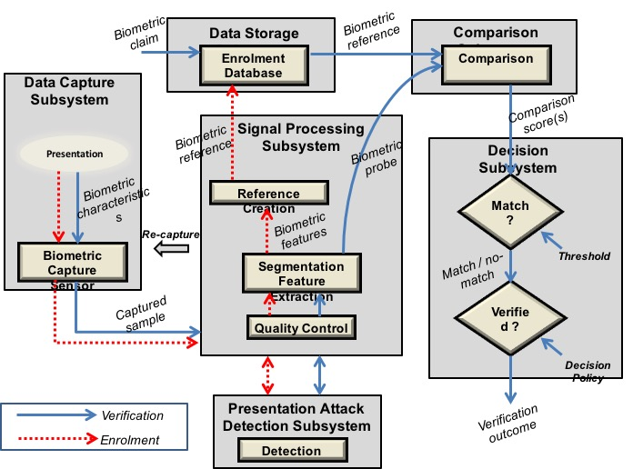

|
Common Criteria Evaluation and Validation SchemeNational Information Assurance Partnership (NIAP) |
The CCDB Working Group has been requested to develop an Essential Security Requirements (ESR) for biometrics product. This initial draft contains material that was provided by the initiator, IPA (Japan), for a cPP and reviewed by Working Group members (AISEP (Australia), CCN (Spain) and TSE (Turkey)) and initial Biometric Security iTC members (AIST (Japan), Apple (United States), Epoche & Espri and Applus Laboratories (Spain), Safran Identity & Security (France), TUViT (Germany)) then submitted to the CCDB for public review.
Security requirements in this draft don't depend on biometric characteristics (e.g. fingerprint, face and vein). Therefore the cPP that is to be developed based on this ESR does not depend on biometric characteristics either. The evaluation methodology is defined and described in the supporting document for each biometric characteristic if necessary.
It is acknowledged that various PPs for biometric technology are already existing by the time that this document is developed, see [BSI-CC-PP-0043-2008], [BSI-CC-PP-0062-2009], [BSI-PP-0063-2009], [AIST-PP-BVPPP-2016]. However, the authors of this document agree that the development of a cPP for biometrics shall solely start on the basis of this Essential Security Requirements Document and under consideration of the following objectives:
Accompanying supporting documents are dependent of a concrete biometric modality. Currently supporting documents for fingerprint and finger/palm vein are planned to be developed. CCRA certificates that claim conformance to the cPP shall be issued only for modalities for which CCRA endorsed supporting documents are available.
References:From ISO/IEC 2382-37 Information technology — Vocabulary — Part 37: Biometrics (cf. http://standards.iso.org/ittf/PubliclyAvailableStandards/c055194_ISOIEC_2382-37_2012.zip), we have the following definitions.
Biometric recognition, biometrics -- automated recognition of individuals based on their
biological and behavioural characteristics
Biometric System -- system for the
purpose of the biometric recognition of individuals based on their behavioural and
biological characteristics
This document describes the high-level set of security requirements that a biometric product shall satisfy when evaluated against the cPP written for such technology.
The biometric product enrols and/or verifies a user using his/her biometric characteristic. Each process is described in the following paragraphs. A biometric product may implement only one of those functionalities.
a) Enrolment During the enrolment process the biometric product captures the biometric raw data of a user and extracts the biometric feature it is working with. The biometric feature is then combined with the identity of the user and stored as a biometric template in a database.
b) Biometric verification During the verification process the user provides his/her identity and biometric characteristic to the biometric product. The biometric product retrieves the biometric template associated with the identity from the database, compares it with the biometric feature extracted from the captured biometric characteristic of the user to generate the similarity between the two data, and determines whether user is accepted or rejected based on the similarity. Examples of modalities used by biometric recognition systems are: fingerprint, face, iris, palm print, finger vein, palm vein, speech, signature and so forth. The following figure, inspired from ISO/IEC JTC1 SC37 standards, is a generic representation of a biometric system (other configurations exist). This illustrates the different sub-functionalities on which the biometric enrollment and the biometric verification processes rely on.
When used in a security system, the biometric product needs to take into account the risk of subverting the biometric functionalities. One of the main entry points for an attacker is the biometric capture subsystem where they could present artificial or abnormal biometric traits at the point of presentation and collection of the relevant biometric characteristics, in order to interfere with system policy. As defined in [30107-1], this corresponds to a presentation attack, the “presentation to the biometric data capture subsystem with the goal of interfering with the operation of the biometric system”. It can be realized by presenting an artefact or human characteristic which are called presentation attack instruments. Presentation Attack Detection (PAD) refers to the automatic determination of a presentation attack. The PAD subsystem plays an important role in the security of biometric systems, especially when unsupervised.
[30107-1] ISO/IEC 30107-1:2016. Information technology -- Biometric presentation attack detection -- Part 1: Framework
Biometric products are used for user authentication for mobile devices such as smartphones, PC login at offices, ATMs at banks, and building or room entrance control, or border security checks. The configuration of the biometric products is categorized into the following two types:
Examples of typical boundary (inside the blue frame) of biometric products (figures are
inspired from [30107-1]):
1. Case of a typical fully integrated biometric product:
2. Case of a typical software only product:

3. Case of a typical presentation attack detection sensor-based product:

Requirements captured in this section may already be realized in some products in this technology class, but this ESR is not mandating these capabilities exist in “baseline” level products.